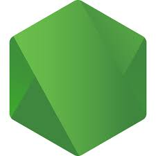
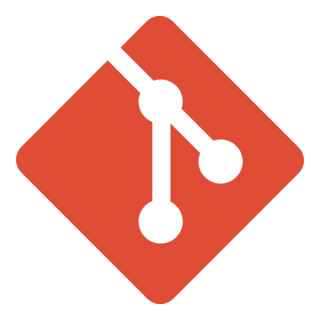
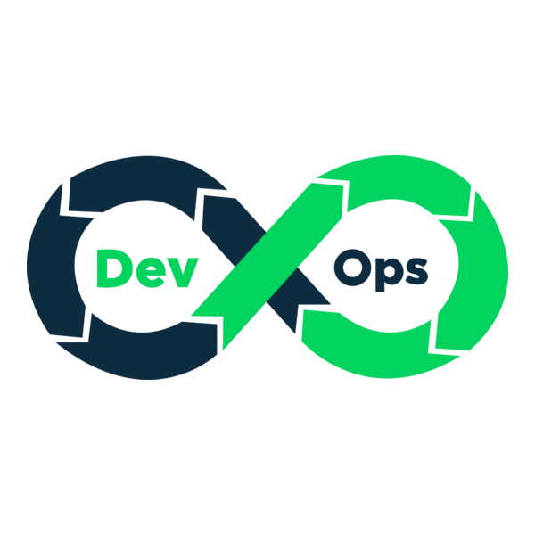
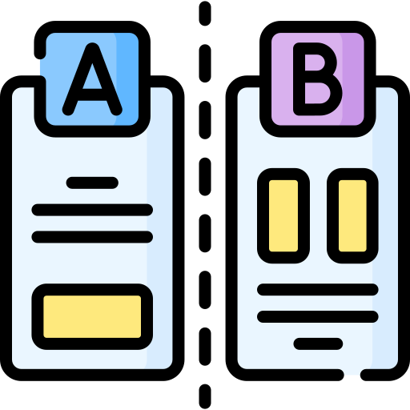
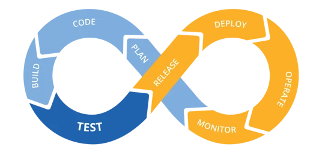
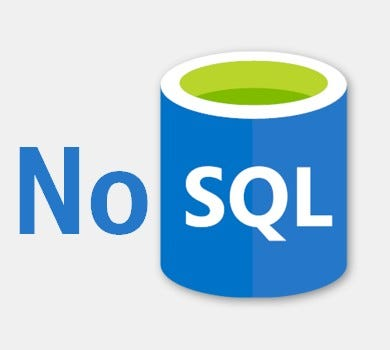
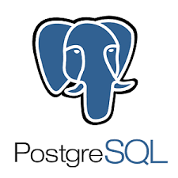
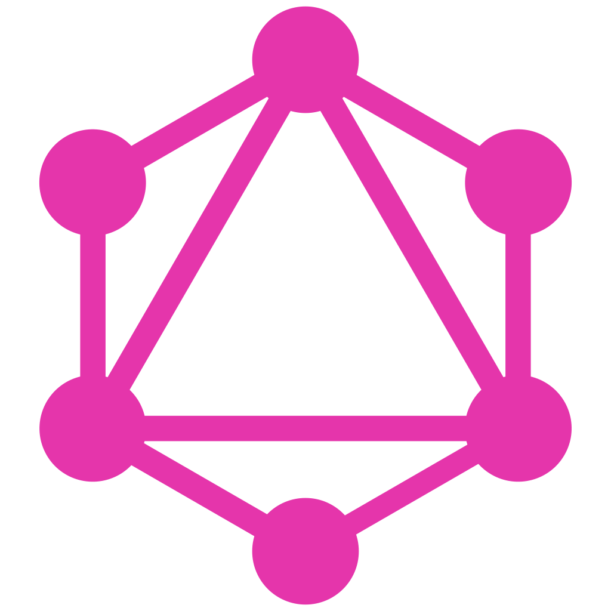
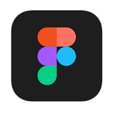

Featured Portfolio
Certifications
Professional Experience
-
Clickistry
Full-stack Developer (Project Based) | 2026
As the Full-stack Developer for Clickistry, a Canadian-based web development company, I designed and developed the company's website from concept to deployment, creating a modern, responsive website using custom HTML, CSS, and JavaScript. I integrated booking systems, AI chatbots, business email services, and third-party SaaS solutions to enhance business operations. I also developed an automated Project Budget Estimator to simplify client inquiries. Additionally, I managed server deployment, hosting configuration, cPanel administration, Cloudflare optimization, and implemented SEO, security, and performance best practices to deliver a fast, reliable, and scalable digital platform.
- Designed and developed a modern, responsive website from concept to deployment using custom HTML, CSS, and JavaScript.
- Integrated booking systems, AI chatbots, business email services, and third-party SaaS solutions.
- Developed an automated Project Budget Estimator to streamline client inquiries and lead generation.
- Configured and managed server deployment, hosting, cPanel, DNS, SSL, and Cloudflare.
- Implemented SEO, performance optimization, and website security best practices.
- Optimized user experience, accessibility, and cross-browser compatibility across desktop and mobile devices.
See more -
Prime Holistic Care
Full-stack Developer (Project Based) | Nov 2025 - Jan 2026
At Prime Holistic Care, I designed and developed a modern, responsive healthcare website with a custom Content Management System (CMS), delivering an end-to-end solution that emphasized performance, security, scalability, and SEO while enabling non-technical administrators to manage website content with ease.
- Customized and developed a responsive healthcare website using React.js, Laravel 12, and MySQL.
- Built a scalable Content Management System (CMS) for dynamic management of pages, services, and website content.
- Integrated RESTful APIs and optimized database performance for improved speed and reliability.
- Deployed and maintained the application on Cloud Server with cPanel, Cloudflare, and SSL configuration.
- Implemented SEO, performance optimization, and website security best practices.
- Delivered the project independently from UI/UX implementation to deployment and post-launch maintenance.
See more -
Tri7 Solutions Inc. Ltd.
Web Developer (Full-time Remote) | 2023–2025
As a Web Developer at Tri7 Solutions Inc. Ltd., I designed and developed high-traffic digital platforms, entertainment websites, and interactive promotional systems that enhanced user engagement and supported business growth. I delivered end-to-end web solutions using modern front-end frameworks and scalable back-end technologies, with a strong focus on performance, maintainability, and user experience.
- Designed and developed the Playme Movies and Olemovies platforms with responsive , user-focused interfaces and SEO best practices.
- Integrated third-party APIs and SaaS solutions to extend platform functionality and automate business processes.
- Built interactive promotional systems, including Christmas bonus games, scratch card campaigns, and digital marketing features.
- Developed a comprehensive Players Rewards platform with a custom CMS for managing promotions, events, rewards, and user engagement.
- Engineered scalable back-end applications using Laravel, CodeIgniter, PHP, and MySQL.
- Integrated RESTful APIs and optimized database queries to improve application performance and reliability.
- Collaborated with cross-functional teams to deliver new features, maintain existing platforms, and support business growth.
- Applied best practices in responsive design, code quality, performance optimization, and version control throughout the development lifecycle.
See more -
Suzuki Philippines Inc.
Web and System Developer / Programmer (Full-time) | 2021–2023
As a Web and System Developer at Suzuki Philippines Inc., I developed and maintained enterprise web applications and internal business systems that streamlined operations across multiple departments. Working in an Agile Scrum environment, I delivered scalable solutions, automated business processes, integrated enterprise databases and APIs, and optimized system performance to support day-to-day business operations.
- Developed and maintained enterprise applications using C#, VB.NET, Java, ASP.NET, React.js, and Microsoft SQL Server.
- Built and enhanced the Dealer Management System (DMS), including analytics, reporting, and dashboard modules.
- Developed internal business systems, including the Online Statement of Account SOA, HR Dashboard, Web-Based Bundy, Export System, and automated reporting tools.
- Created an Online Price Checker application to improve spare parts lookup and support operations.
- Designed interactive dashboards and integrated enterprise APIs to synchronize data across multiple business systems.
- Optimized SQL queries, reporting processes, and application performance for improved reliability and efficiency.
- Managed Microsoft server environments, application deployment, and system maintenance.
- Collaborated in an Agile Scrum environment to deliver scalable, secure, and business-critical solutions on schedule.
See more -
Kirbss IT Solution
Full-stack Developer (Full-time) | 2020–2021
As a Full-stack Developer at Kirbss IT Solution, I designed and developed business websites, CRM-integrated platforms, and Web3 applications for clients across multiple industries. I delivered responsive, high-performance solutions with modern UI/UX, third-party integrations, and scalable architectures tailored to business and blockchain requirements.
- Designed and developed the Kirbss IT Solutions corporate website using custom HTML, CSS, JavaScript, and PHP.
- Built responsive landing pages and integrated CRM solutions to improve client engagement and lead management.
- Developed NFTPRENUER, a Web3 platform focused on cryptocurrency and NFT solutions.
- Built the Dappchain platform with blockchain-focused features and modern web technologies.
- Integrated third-party APIs and SaaS solutions to enhance platform functionality and automation.
- Implemented responsive design, SEO best practices, and performance optimization across all projects.
- Collaborated with stakeholders to deliver scalable, user-friendly solutions from concept to deployment.
See more -
Amanoma Gaming
Full-stack Developer (Project Based) | 2019 - 2020
As a Full-stack Developer at Amanoma Gaming, I developed integrated desktop and web-based gaming platforms that provided a seamless player experience across multiple systems. I built scalable applications, custom APIs, and administrative tools to support real-time gameplay, user management, and efficient platform operations.
- Developed a Windows desktop game client using Visual Basic with real-time gameplay and secure user authentication.
- Integrated VPN connectivity to provide secure and reliable access to gaming services.
- Built a web-based gaming platform using PHP, CodeIgniter, and MS SQL Server.
- Integrated payment gateway services for secure deposits, withdrawals, and transaction processing.
- Developed RESTful APIs to synchronize data between desktop and web applications.
- Created a custom CMS for managing players, game configurations, transactions, and platform content.
- Implemented account management, session handling, online betting features, and real-time game data synchronization.
- Optimized database performance, application reliability, and system scalability for high-volume user activity.
- Collaborated with stakeholders to deliver integrated desktop and web gaming solutions from development through deployment.
See more -
MTEQ Business Solution
ASP .Net Developer (Project Based) | 2019
As an ASP.NET Developer at MTEQ Business Solution, I developed a custom e-commerce platform that streamlined online sales and order management. I delivered a secure, scalable solution with modern e-commerce features, payment integration, and performance optimization while collaborating closely with stakeholders throughout the project lifecycle.
- Developed a custom e-commerce website using ASP.NET, C#, and Microsoft SQL Server.
- Built product catalog, shopping cart, checkout, and order management functionalities.
- Integrated secure payment gateway services for online transaction processing.
- Developed administrative tools for managing products, inventory, customers, and orders.
- Optimized application performance, database queries, and overall system scalability.
- Implemented responsive UI, security best practices, and cross-browser compatibility.
- Collaborated with clients to gather requirements, deliver features, and provide post-deployment support.
See more
Why You Should Hire Me?
- Senior Full Stack Developer with 6+ years of experience building, maintaining, and scaling production-ready web applications
- Expert in both backend and frontend engineering and design, delivering robust server-side architecture alongside intuitive, visually engaging user interfaces
- Expert in Laravel, PHP, and JavaScript, with strong experience in React, Vue, and modern frontend architectures
- Architect and implement RESTful APIs and microservices, ensuring high performance, security, scalability, and long-term maintainability
- Advanced SQL expertise, including schema design, complex joins, query optimization, indexing strategies, and performance tuning for high-traffic systems
- Strong experience with NoSQL and JSON-based data architectures, including MongoDB, schema modeling, and performance optimization
- Proficient in third-party API integrations and GraphQL, enabling seamless data exchange across services and platforms
- Adaptable to AWS cloud architecture, with deploying, scaling, and optimizing applications using EC2, S3, RDS, CloudFront, and IAM
- Experienced in server management, including Linux-based environments, deployment configuration, monitoring, security hardening, and performance tuning
- Strong background in DevOps and CI/CD pipelines, automating build, test, and deployment workflows using GitHub Actions, Docker, and cloud-based CI/CD tools
- Strong independent developer, trusted to own projects end-to-end — from system architecture and UI/UX design to deployment and post-launch support
- Experienced in optimizing, refactoring, and upgrading legacy systems, improving performance, stability, and maintainability without disrupting operations
- Write clean, readable, and maintainable code, following best practices, design patterns, and coding standards
- Collaborate effectively with QA engineers and cross-functional teams, ensuring thorough testing and high-quality releases
- Consistently deliver high-quality applications on time, even in fast-paced and deadline-driven environments
- Working proficiency in C# and Java, enabling smooth adaptation to enterprise and multi-platform environments
- Strong UI/UX-focused mindset, designing intuitive, user-centered interfaces supported by scalable backend systems
- Experienced in wireframing, prototyping, and usability testing, continuously refining both frontend experience and backend workflows
- Highly adaptable engineer, able to quickly learn and work with any programming language, framework, or technology stack
- Technical leader and mentor, providing code reviews, architectural guidance, and development best practices
- Proven ability to translate business requirements into scalable, reliable technical solutions
- Detail-oriented, reliable, and delivery-focused, thriving in high-pressure and cross-functional environments
My Tech Stack & Skills
Backend Development
- PHP
- CodeIgniter
- Laravel
-

Node JS  C Sharp
C Sharp Visual Basic
Visual Basic
- .Net
 Java
Java
- Spring Boot
 Python
Python
Frontend Development
 React
React Vue
Vue Next JS
Next JS- Alphine Js
 Tailwind
Tailwind- Boostrap
 JavaScript
JavaScript CSS 3
CSS 3 HTML 5
HTML 5
Development Tools

Git- GitHub
- Wordpress
 Docker
Docker- Cloud Flare
 SEO
SEO

DevOps
A/B Testing
CI/CD Pipeline
Databases
 MySQL
MySQL MSSQL
MSSQL
NoSQL- SQLite

PostgreSQL MongoDB
MongoDB
GraphQL AWS
AWS
Design Tools
 Adobe Photoshop
Adobe Photoshop
- Adobe Illustrator

Figma Canva
Canva